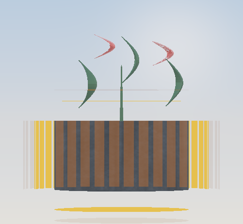
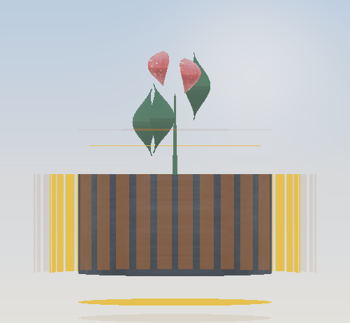
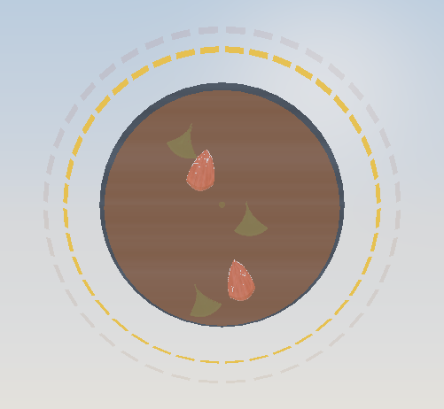

Kitchen Herb Planter
A distinct kitchen herb planter building-landscape object with explicit support, irrigation or attachment semantics and object-local botanical geometry.
Quality rating
Evidence completeness: 80/100. No verified numeric visual match attached to this exact source. Engineering accuracy, simulation correctness and manufacturability are not certified.
Source
SMBV45_KitchenHerbPlanter.grammar · 1990 bytes
dd3bc8999dee57d12f592cbc56edc204c70316daDesign and grammar usage
Open the grammar in the ProGen3D desktop editor using File → Open (Ctrl+O). Regenerate the scene, fit the preview extents, and inspect front, right, top and isometric views. For dependencies or project-specific resources use the original repository path at the recorded commit; copying only the grammar is not a guarantee of standalone operation.
Use object inspection for SMB_VEGETATION_KITCHEN_HERB_PLANTER. The authored comparison contract uses front, right and top views with a 5° vertical field of view. Geometry primitives: Plant, LeafBlade, PetalBlade.
| Object class | KitchenHerbPlanter |
|---|---|
| Taxonomy | SmallModernBuilding / BuildingSite / LandscapeSystem / Plant / KitchenHerbPlanter |
| Generation methods | SpeciesDriven |
| Authored extent XYZ | 2.4 × 3.4 × 2.2 |
| Placement | ConstraintSolved |
| Orientation | WorldUpWithFreeYaw |
| Connection interfaces | baseSupport (Support), irrigationConnection (ServiceConnection), inspection (InspectionInterface) |
| Visual requirements | object-local support or attachment geometry; recognizable botanical silhouette in front right and top views; non-flat layered organic geometry; container or soil host; distinct stems and leaves; maintainable access |
| Biological calibration | Architectural archetype; biological measurements and physical calibration are not certified. |
Sample renders










Documentation and evidence
Provenance
Source commit 95c61f312c8bbfe5489b312beee569f437f075e9. Exact duplicates are represented by one catalogue entry; original paths remain accessible.